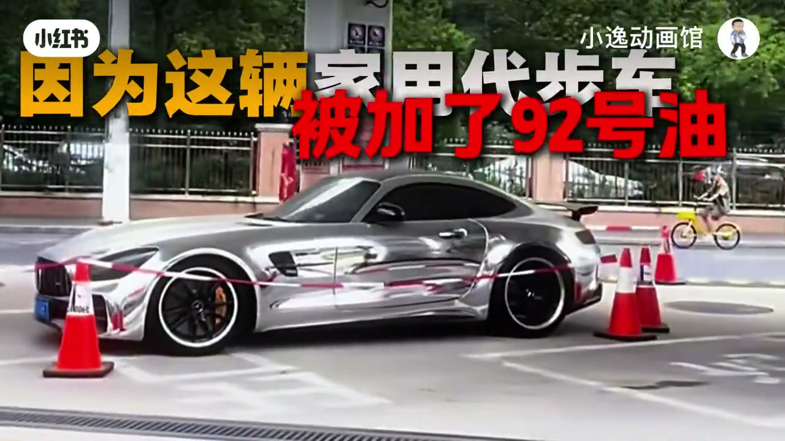
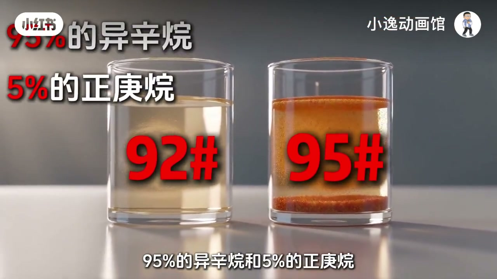
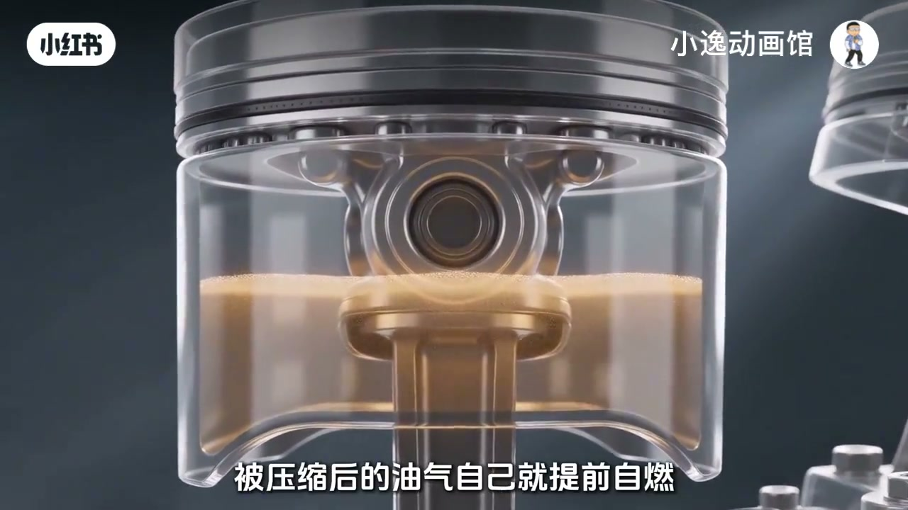
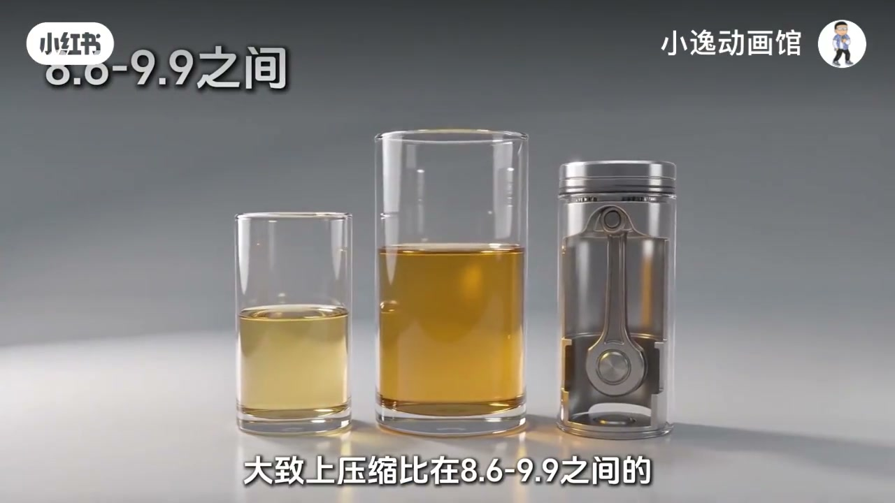
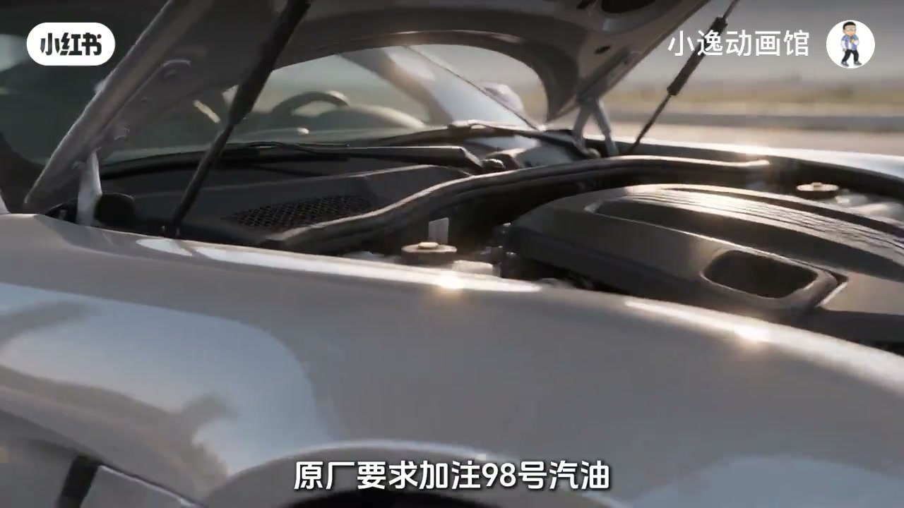
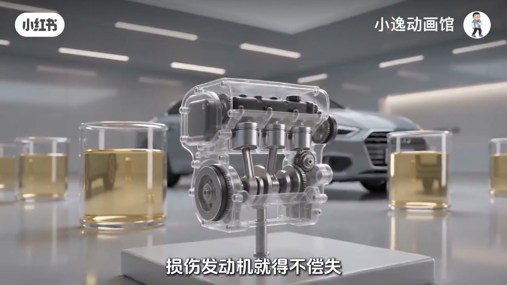

内容要点
「小逸动画馆」用动画讲清汽油标号：92/95/98 比的是抗爆性，不是纯度，对照物是异辛烷与正庚烷。压缩比越高越需要高标号；该用 92 却加 95 未必更强还可能积碳，该用 98 却加 92 易暴震伤机。加错后未启动则拖车排空，已启动亮灯则靠边熄火；日常按厂家推荐标号。
知识结构
300 万级 AMG GTR 被加 92 后拒启动；顺带打掉「95 更纯、更耐烧」的误解。
抗爆性对照异辛烷/正庚烷；抗爆不足会提前自燃，形成暴震（敲缸）。
作者粗分：约 8.6–9.9→92，10.0–11.5→95，>11.6→98。
偶加更高标号：动力未必增强，抗爆「富裕」甚至可能积碳；偶加更低标号：易暴震伤机。
未点火不启动、拖车排空；已行驶亮灯则熄火。加油按厂家推荐，不盲目追高也不长期用低。
标号服务抗爆与压缩比匹配；向上「升级」不等于性能升级，向下「省钱」才真正伤发动机。最终以厂家手册为准。
00:00–00:35加油站停住的 AMG：加了 92，车主死活不启动
视频用夸张钩子开场：一辆约 300 万的奔驰 AMG GTR 停在加油站「就是不走」——因为被加了 92 号油，车主死活不肯点火；工作人员急得拉起警戒线。作者反问：这件事你觉得谁占理？画面里银色跑车被锥桶与警戒线围住，大字写着「被加了 92 号油」，把「家用代步车」说成讽刺。
接着先拆认知误区：不少人觉得 95 比 92「更纯」「更耐烧更省钱」，于是把 95 当成高端、把 92 当成「马尿」，甚至觉得给车加 95 是「山猪吃细糠」。作者直接说：大错特错。视频未交代该加油站事件是否真实新闻，正文按口播叙事理解。

00:35–01:4892/95 比的是抗爆性，不是纯度
第一问：92 和 95 到底什么意思？口播强调：指的是抗爆性的能力，不是纯度。画面用两杯油样对比，并写出标准对照：95 号汽油的抗爆性能，等效于约 95% 异辛烷与 5% 正庚烷（92 则对应约 92% / 8%）。Whisper 把「异辛烷 / 正庚烷」听成「一星丸 / 正根丸」，正文以画面字幕为准。
然后用发动机剖面讲暴震：点火后活塞上压，正常要等火花塞点火，火焰平稳推活塞；若汽油抗爆性差，压缩后的混合气会提前自燃，多处同时炸开，冲击波撞击活塞与缸体——这就是暴震，口语也叫敲缸。科学家用性格稳定的异辛烷、脾气暴躁的正庚烷按比例混合，做成标准对比油，来标定「抗爆等级」。


01:48–02:23该喝什么油看压缩比
第二问：你的车到底该喝什么油？作者说主要看两个字——压缩比：活塞从底部到顶部，气缸容积被压缩的倍数。压缩比越高，混合气被挤得越狠，缸内温度与压力越高，汽油也越容易提前自燃。
视频给出「大致上」的经验分档（作者观点，非所有车型硬法规）：压缩比约 8.6–9.9 用 92 挺好；约 10.0–11.5 更适合 95；超过 11.6 要考虑 98。画面用玻璃杯里的活塞组件叠出「8.6–9.9 之间」。后文收束仍强调以厂家推荐为准。

02:23–03:18加高标号未必更强；加低标号才危险
问题一：发动机参数在约 8.6–9.9、本来该用 92，偶尔加了 95 会怎样？作者说：不会变得性能更强——只是抗爆性更「富裕」了；燃烧不一定更充分，还可能产生积碳。比喻是：平时一碗隆江猪脚饭就够，今天再加鸡腿，不会因此更有力气，还可能「肚子更久空不了」。
问题二：压缩比超过约 11.6、本来该用 98，偶尔加了 92？「那可就危险了」——压缩比太高，低标号抗爆不够，很容易暴震，长期可能损伤发动机。这里把「向上加」与「向下加」的不对称讲清楚：多花钱不等于更强，少花钱才真正伤机。
03:18–04:10加错油怎么应急，日常怎么选
回到开场案例：这台发动机压缩比超过约 11.6，原厂要求加注 98；一旦灌入 92，抗爆远远不够，深踩油门、高转速时极易严重暴震。所以车主一直不走，不是为了那一箱油，而是在保护那台昂贵发动机。
应急流程（视频作者建议）：若刚加进去还没点火——原地不要启动，叫拖车到修理厂用专业设备把错油排空；若已经启动行驶，发动机暴震、报警灯亮——立刻靠边熄火，不要继续开，避免永久性损坏。最后原则：加油不是越贵越好，也不是越便宜越划算；按厂家推荐标号加合适的才最好——没必要盲目追高白花钱，也不能为了省钱长期用低于要求的油。

